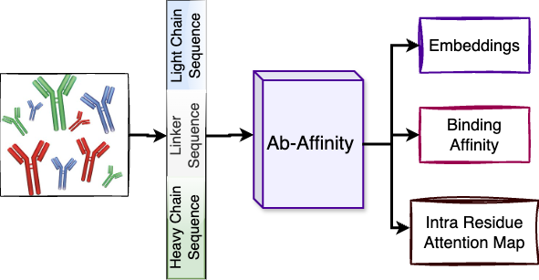
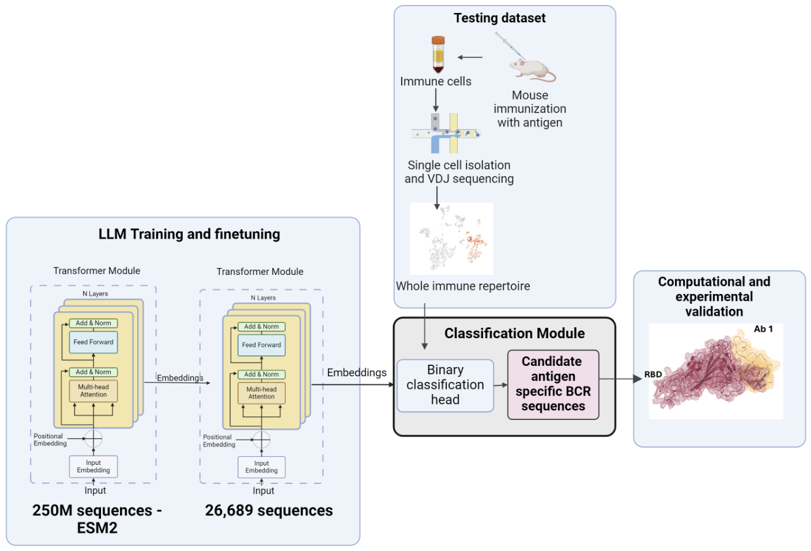
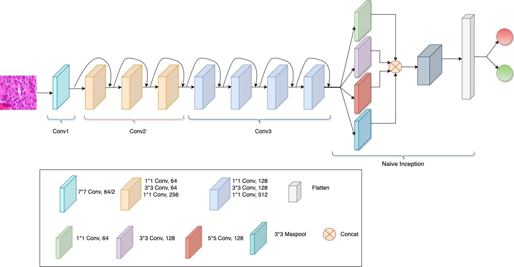
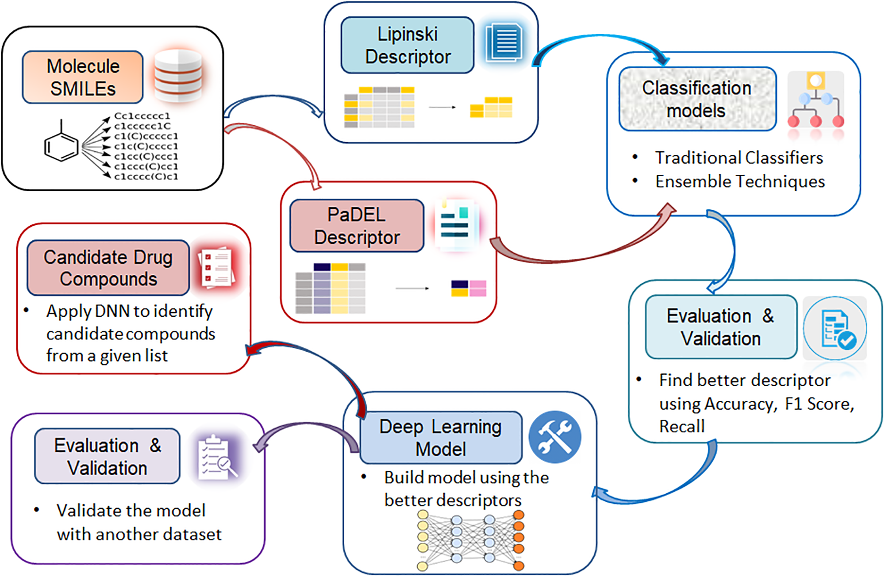
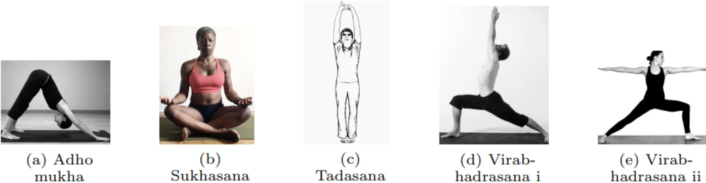

|
About · Publications · News · Experience |
|
My research develops machine learning and large language model-based methods for biological discovery, with emphasis on antibody–antigen interaction modeling, antibody design and optimization, and structure-aware prediction of binding and neutralization. I also build data-efficient and interpretable AI frameworks for biomedical applications, including antiviral drug screening and medical image analysis. Full list on Google Scholar. |
| 2026 |

|
Comparative structural analysis of protein complexes with SPICE
Faisal Bin Ashraf, Stefano Lonardi Nucleic Acids Research, Web Server Issue, 2026 paper / webapp End-to-end web platform for comparative structural analysis of protein–protein complexes, supporting interface characterization, energetic analysis, and variant-level comparison. |
|
 |
AbAffinity: A Large Language Model for Predicting Antibody Binding Affinity against SARS-CoV-2
Faisal Bin Ashraf, Animesh Ray, Stefano Lonardi AAAI, FMs4Bio Workshop, 2025 paper / code Ab-Affinity, a new large language model that can accurately predict the binding affinity of antibodies against a target peptide, e.g., the SARS-CoV-2 spike protein. The model achieved a peak Pearson correlation coefficient of 0.712 and successfully mapped therapeutic antibody thermostability without explicit training. |
| 2025 |

|
Predicting Antibody–Antigen Interactions with Structure-Aware LLMs: Insights from SARS-CoV-2 Variants
Faisal Bin Ashraf, Vinz Angelo Madrigal, Stefano Lonardi Journal of Chemical Information and Modeling, 2025 paper / code Structure-aware ESM2 framework that jointly predicts antibody binding and neutralization for SARS-CoV-2 variants. Improves binding AUC 0.84 → 0.93 and neutralization AUC 0.88 → 0.95, outperforming DeepAIR, AntiBERTa, AbMap, and A2Binder. |
|
 |
ASPred: Identification of Antigen-Specific B-Cell Receptors from Single V(D)J Sequences Using Large Language Models
Karen Paco, Mariana Paco Mendivil, Zihao Zhang, ..., Faisal Bin Ashraf, ..., Stefano Lonardi, Fernando L. Barroso da Silva, Animesh Ray Journal of Immunology, 2025 · NeurIPS LXAI Workshop, 2024 paper LLM-based framework trained on antigen-BCR sequence pairs. Accurately predicts antigen-specific B-cell receptors from full repertoires, generalizes to unseen antigens, and validates candidates via molecular dynamics simulations. |
| 2024 |

|
A Large Language Model Guides the Affinity Maturation of Antibodies Generated by Combinatorial Optimization Algorithms
Faisal Bin Ashraf, Karen Paco, Zihao Zhang, Christian J. Dávila Ojeda, Mariana P. Mendivil, Jordan A. Lay, Tristan Y. Yang, Fernando L. Barroso da Silva, Matthew H. Sazinsky, Animesh Ray, Stefano Lonardi Preprint (bioRxiv) · AAAI FMs4Bio Workshop, 2025 preprint / code Ab-Affinity: hybrid LLM-driven antibody design framework integrating genetic algorithms and simulated annealing to generate novel SARS-CoV-2-targeting antibodies. Achieves >160× binding affinity improvements over experimental candidates while maintaining strong biophysical stability. |
|
 |
Enhancing Breast Cancer Classification via Histopathological Image Analysis: Leveraging Self-Supervised Contrastive Learning and Transfer Learning
Faisal Bin Ashraf, SM Maksudul Alam, Shahriar M Sakib Heliyon (Cell Press), 2024 paper / code Lightweight breast cancer histopathology classifier combining self-supervised contrastive learning and a ResNet–Inception architecture. Achieves up to 98% accuracy with ~50% fewer parameters than existing leading models. |
| 2023 |
|
 |
Bio-Activity Prediction of Drug Candidate Compounds Targeting SARS-CoV-2 Using Machine Learning Approaches
Faisal Bin Ashraf, Sanjida Akter, Sumona Hoque Mumu, Muhammad Usama Islam, Jasim Uddin PLOS ONE, 2023 paper / code Benchmarked 27 classifiers for SARS-CoV-2 3CLpro inhibitor prediction. Neural network achieves 91–93% accuracy. SHAP-based interpretability identifies key molecular fingerprints for antiviral drug screening. Validated on >100,000 molecules. |
|
 |
YoNet: A Neural Network for Yoga Pose Classification
Faisal Bin Ashraf, Muhammad Usama Islam, Md Rayhan Kabir, Jasim Uddin SN Computer Science, 2023 paper Data-efficient deep learning architecture for yoga pose recognition capturing spatial and depth features. Outperforms ResNet, Inception, and Xception; achieves 94.9% accuracy and 95.6% precision. |
| 2022 |
|
An Efficient Deep Learning Technique for Bangla Fake News Detection
Faisal Bin Ashraf, et al. IEEE ICAEEE, 2022 paper / code Deep learning model for Bangla-language fake news classification, addressing low-resource NLP challenges in misinformation detection. |
|
An Improved K-means Clustering Algorithm for Multi-dimensional Multi-cluster Data Using Meta-heuristics
Faisal Bin Ashraf, et al. IEEE ICAEEE, 2022 paper / code Meta-heuristic-enhanced K-means clustering that improves convergence and cluster quality for high-dimensional, multi-cluster datasets. |
|
© Faisal B. Ashraf · faisal.b.ashraf@gmail.com |